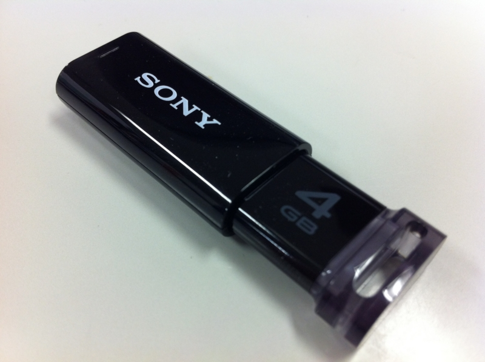
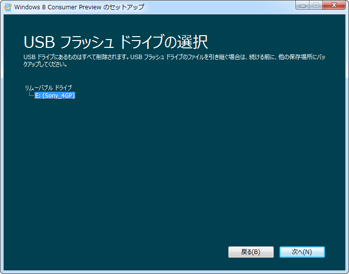
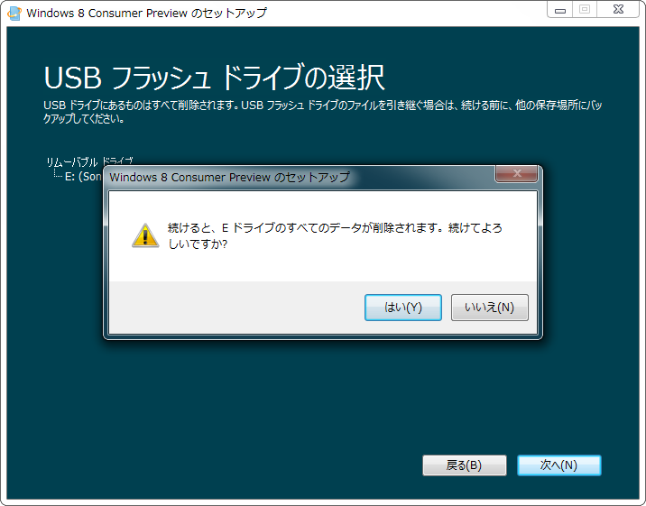
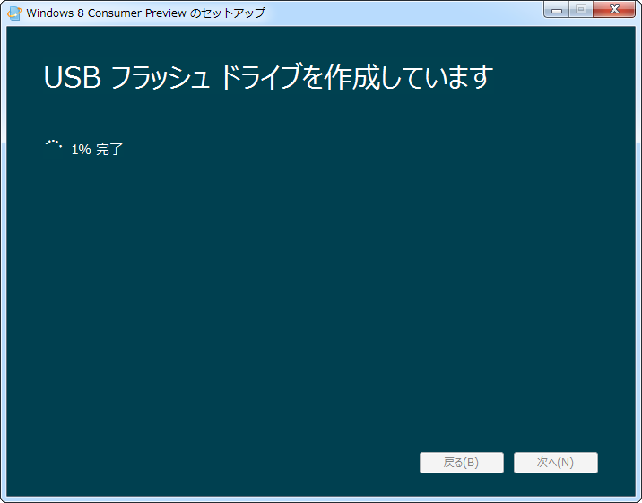
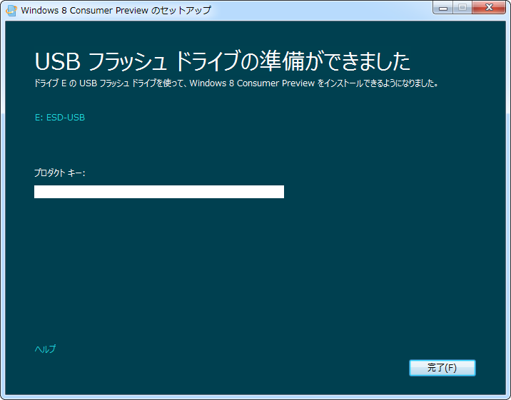
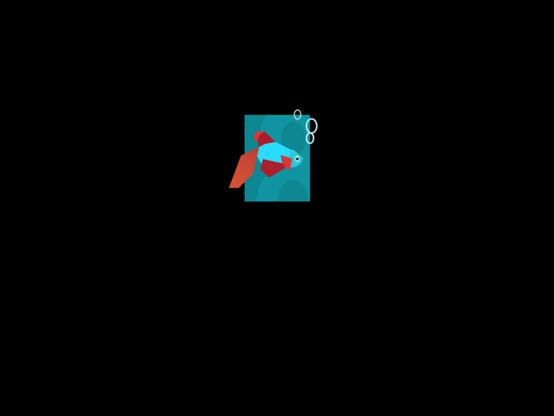

Windows 8 Consumer Preview のインストールUSBメモリを作ってみた
公開日：

- Windows 8 Consumer Preview を DVD-R からインストール……失敗 - だるろぐ
- Windows 8 Consumer Preview （途中までインストールした） - だるろぐ
昨日の続き。会社行く途中に、錦糸町のヨドバシに寄ってUSBメモリを調達した。これでUSBメモリでインストールメディアが作れる！

SONY ノックスライド式USBメモリー ポケットビット 4GB ブラック キャップレス USM4GP B
- 出版社/メーカー: ソニー
- 発売日: 2011/06/24
- メディア: Personal Computers
- この商品を含むブログを見る

見えた見えた。ちなみに Windows 8 のファイルサイズは2～3GB程度ある*1ので、USBメモリは4GB以上のものを用意するとよさげ。

USBメモリは一度フォーマットされる。

作成。

完了。プロダクトキーっていう欄はなんなんだろうネ。

あとは Windows 8 をお楽しみください。USBメモリを作ったところで満足してしまって、実際にインストールできるかまでは試していない。
*1:32bitか64bitかで違う